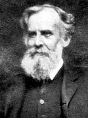
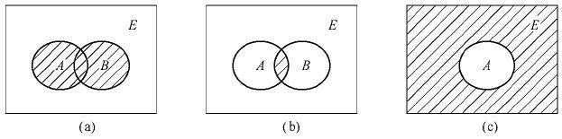
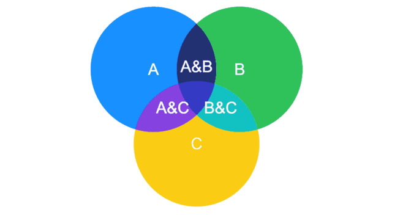
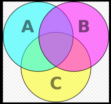
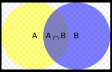
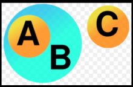

Origin:
John Venn was a 19th-century British philosopher and mathematician.
He invented the Venn diagram in 1881.
There is a memorial to his invention on the stained glass window of Caius College in Cambridge University.

Fig.1.1 - John Venn August 4, 1834-April 4, 1923
Definition:
Venn diagram is a sketch used to represent sets in a less strict sense in the so-called branch of set theory mathematics.
They are used to show mathematical or logical connections between different groups of things (collections),
and are particularly suitable for representing "rough relationships" between collections (or) classes.
It is also often used to help infer (or understand) Derivation process) Some laws about set operations (or class operations).

Fig.1.2 - Representing collections with Venn diagram
Example:
In the Venn diagram method, if there is a discourse, a rectangular box (inner area) represents the discourse;
each set (or class) is represented by a circle / ellipse (inner area).
Two circles / ellipse intersect, and the intersection part represents the common elements of two sets (or classes).
Two circles / ellipse do not intersect (separate or tangent, but in fact, tangent in Venn diagram is meaningless ,
Because the Venn diagram is represented by the internal area of the graph), it means that these two sets (or classes) have no common elements.

Fig.1.3
For example, a yellow circle (set A) can represent all living things on two feet.
The blue circle (set B) can represent all living creatures that can fly.
The area where the yellow and blue circles overlap (called the intersection) contains all living creatures that are flying and biped-such as parrots.
(Imagine each individual living creature type as a point in this picture).
People and penguins will be in the orange circle that does not overlap with the blue circle.
Mosquitoes have hexapods and can fly, so the mosquito points can be in the blue circle that does not overlap with the orange circle.
Things that are not bipedal and cannot fly (such as whales and rattlesnakes) can be represented as points outside these two circles.
Technically, the Venn diagram above can be interpreted as "the connection between set
A and set
B.
They can have some (but not all) elements that are common".

Fig.1.4
The combined area of sets A and B is called the union of sets A and B.
In this case, the union contains everything that is either biped, or can fly, or is biped and can fly.
The overlapping circles imply that the intersection of the two sets is not empty-that is, in fact there are living things in yellow and blue circles at the same time.

Fig.1.5
In this example,
one collection is completely inside another collection.
We say that set A is all the different types of cheese that can be found in the world,
and set B is all the food that can be found in the world. From this picture,
you can see that all cheese is food, but not all food is cheese.
Furthermore, there is no common element (member of the set) between set C (such as metal creations) and set B.
From this we can logically conclude that no cheese is a metal creation (or vice versa).
Formally, the above graph can be interpreted mathematically as "set A is a true subset of set B, and set C and set B have no common elements."

Fig.1.6
Or interpreted as a syllogism
- All As is Bs
- No Cs is Bs
- So, no Cs is As
- So, no As is Cs